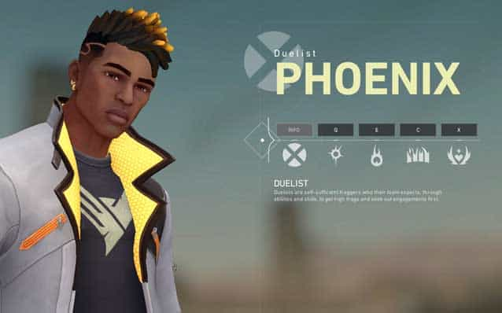

Characters
There are 12 Valorant characters in the game at the time of writing and it’s likely that there are a few more in the works. We’ve played them all since the game released to the public and have a pretty good idea of all the character abilities in Valorant and what kinds of role they each excel at across the battlefields of this tense tactical shooter.

Hot Hands (E) – Throw a fireball that explodes after a short delay on impact with the ground. The fire zone damages enemies but heals Phoenix.
Blaze (C) – Cast a flame wall that blocks enemy vision and damages anyone passing through it. The wall can be bent both horizontally and vertically so you can cover ramps, too.
Curveball (Q) – Cast a curved flare that bursts into a light after a short delay, temporarily blinding anyone and can be curved left and right.
Run it Back (X) – Marks your current location. If you die while this ability is active, or when it expires, you’ll respawn at the marked location with full health.
Phoenix
Hot Hands (E) – Throw a fireball that explodes after a short delay on impact with the ground. The fire zone damages enemies but heals Phoenix.
Blaze (C) – Cast a flame wall that blocks enemy vision and damages anyone passing through it. The wall can be bent both horizontally and vertically so you can cover ramps, too.
Curveball (Q) – Cast a curved flare that bursts into a light after a short delay, temporarily blinding anyone and can be curved left and right.
Run it Back (X) – Marks your current location. If you die while this ability is active, or when it expires, you’ll respawn at the marked location with full health.
Raze
Paint Shells (E) – Cluster grenade that deals initial impact damage, followed by damage from the clusters.
Boom Bot (C) – Set down an explosive robot that goes in a straight line, bouncing off walls until it detects an enemy in front of it. It will then home in and detonate on them unless shot.
Blast Pack (Q) – Like a C4 satchel. Throw it down and either detonate it when you want or let the timer run down. Deals AoE damage and displaces Agents.
Showstopper (X) – Pull out a rocket launcher and fire it down a lane. The explosion deals huge damage to anyone in its radius. We’ve seen aces with a single shot from this.

Brimstone
Sky Smoke (E) – Use your map to call in smokescreens that obscure vision, click to set the locations, and confirm to launch.
Stim Beacon (C) – Target a nearby location to call in the beacon, giving all players near the beacon rapid-fire.
Incendiary (Q) – Launch a grenade that deploys a damaging field of fire
Orbital Strike (X) – Target a nearby location, launch a devastating orbital strike that damages enemies for several seconds.
Jett
Tailwind (E) – Dash a short distance.
Cloudburst (C) – Throw a cloud of fog that obscures vision on impact.
Updraft (Q) – Launch upwards after a brief delay.
Blade Storm (X) – Throw deadly throwing knives that deal damage and kill on headshots. A kill restores daggers, left click throws a single dagger and right click throws all remaining daggers.
Sage
Healing Orb (E) – Heal an ally or yourself to full health over a few seconds.
Barrier Orb (C) – A wall that can be rotated.
Slow Orb (Q) – An orb that breaks into a slowing field on impact with the found, all caught in the field are slowed, grounded, and make a noise when moving.
Resurrection (X) – Target a friendly corpse, after a short delay revive them with full health.
Viper
Toxic Screen (E) – Deploy a line of gas that can be reactivated to create a wall of toxic gas which costs fuel.
Snakebite (C) – Fire a projectile that explodes into a pool of acid that does damage.
Poison Cloud (Q) – Throw a cloud of gas that can be reactivated to create a smoke cloud which costs fuel. This can be redeployed after a cooldown.
Viper’s Pit (X) – A toxic cloud covers a large radius and highlights enemies to Viper, the duration of the cloud extends if Viper remains in the cloud.
Breach
Fault Line (E) – Equip a seismic blast, hold fire to increase the distance, and release to set off a quake that dazes all players caught in it.
Aftershock (C) – Equip a Fusion Charge and fire it to send a slow-firing burst through a wall, which deals high damage to anyone it connects with. More handy for clearing corners than actually getting frags.
Flashpoint (Q) – Equip a blinding charge that can be set on a wall. It fires a fast burst that blinds anyone on the other side.
Rolling Thunder (X) – Equip a seismic charge, fire to send a quake through all terrain in the ult’s cone of effect. This dazes and knocks anyone caught in its blast into the air. It also deals some damage.
Cypher
Spycam (E) – Place a remote camera, once placed reactive to view the video feed. Left click while the camera is activated to fire a tracking dart.
Trapwire (C) – Place a tripwire between two walls, triggered enemies are restrained and revealed for a short time. If the trap hasn’t been destroyed, it activates to daze the trapped victim.
Cyber Cage (Q) – Place a remote activation trap, reactive to create a cage that slows enemies who pass through it. Traps can be detonated.
Neural Theft (X) – Once an enemy is killed, information can be extracted of the locations of their living allies.
Sova
Recon Bolt (E) – Fire a bolt that deploys a sonar emitter and tags nearby enemies, revealing them.
Owl Drone (C) – Deploy and control a drone that reveals enemies around the map. Once active you can fire a tracking dart that reveals one enemy’s location until they remove it.
Shock Bolt (Q) – Fire and explosive bolt that damages enemies on impact. Use it to clear out boxes and corners.
Hunter’s Fury (X) – Fire up to three energy blasts that spear across the entire map and each hit enemy takes damages and is marked.
Omen
Dark Cover (E) – Cast an orb that bursts into a sphere of shadow obscuring the final location. Can be charged to increase distance.
Shrouded Step (C) – After a delay, teleport a short distance.
Paranoia (Q) – Cast a shadow in a straight line that blinds anyone it touches.
From the Shadows (X) – Select anywhere on the map to teleport and reform, will initially appear as a shadow, which can be killed by enemies and cancel the teleport. If teleport is successful, you become invisible for a short time.
Reyna
Dismiss (E) – Consumes a nearby soul orb, becoming intangible for a short duration. If your ultimate is active, also become invisible.
Leer (C) – Throw an eye through surfaces. The eye will blind all enemies who look at – only affects distant vision, so use to take on AWPers.
Devour (Q) – Enemies killed by Reyna leave behind Soul Orbs that last 3 seconds. Consume a nearby soul orb, rapidly healing for a short duration. Health gained through this skill exceeding 100 will decay over time. If your ultimate is active, this skill will automatically cast and not consume the orb.
Empress (X) – Enter a frenzy, increasing firing speed, equip, and reload speed dramatically. Scoring a kill renews the duration.
Killjoy
Alarmbot (E) – Deploy a bot that hunts down enemies in range and explodes, applying vulnerable. Can be recalled once deployed.
Turret (C) – Fire deploys a turret that fires at enemies in a 180 degree cone. Can be recalled once deployed.
Nanoswarm (Q) – Throw a grenade that lands and goes covert, activating the grenade deploys a swarm of damaging nanobots.
Lockdown (X) – Fire to deploy the device, after a long windup, the device detains all enemies caught in the radius, and can be destroyed by enemies